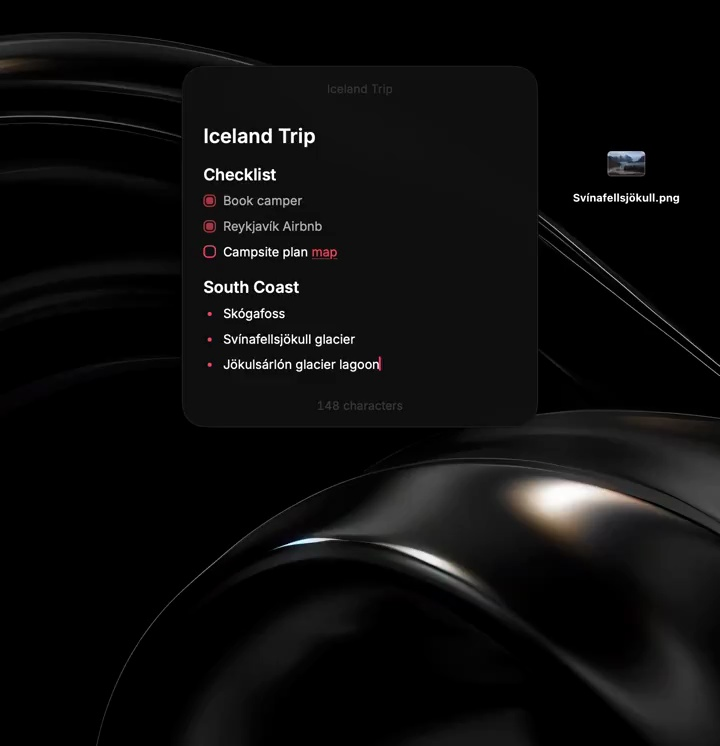
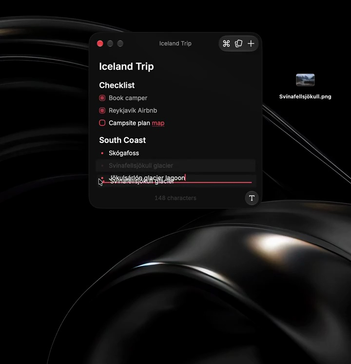
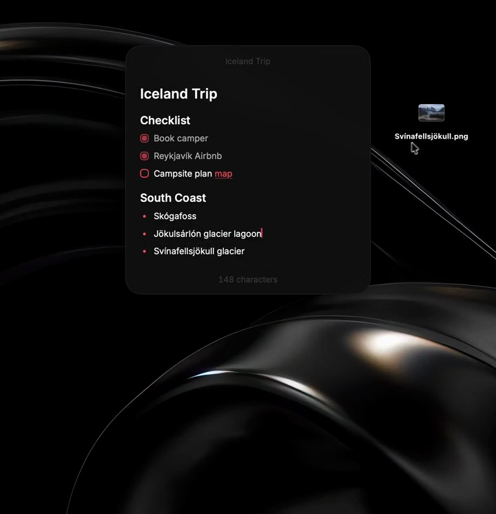
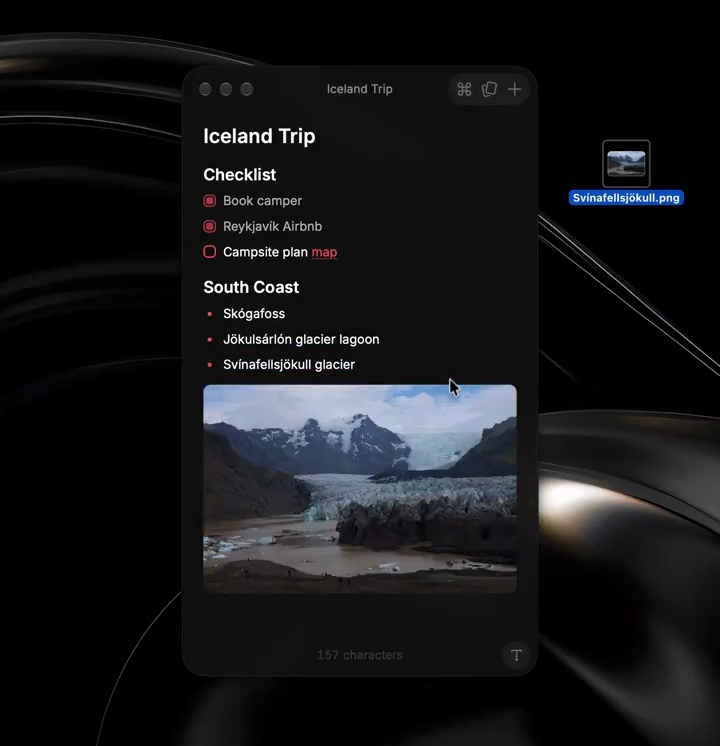
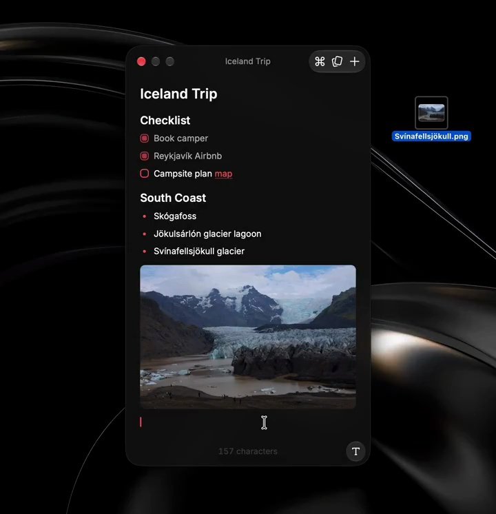
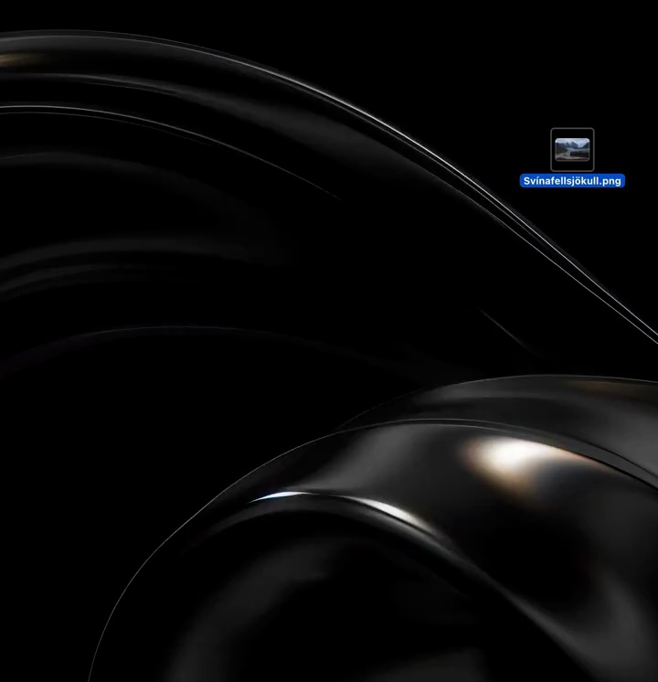

Raycast / V158
本周更新：Notes 支持图片
先让清单完整可读，从桌面右侧拖动图片到笔记下方。文件跟随光标，释放后图片展开，笔记窗口随内容增高。
构图与编排 可播放 · 可替换内容
整体编排规则示例
查看 HTML 源码
<!doctype html><html lang="zh-CN"><meta charset="utf-8"><meta name="viewport" content="width=device-width,initial-scale=1"><title>本周更新：Notes 支持图片 · sequence</title><style>html,body{margin:0;width:100%;height:100%;overflow:hidden;background:#050505}canvas{display:block;width:100%;height:100%;object-fit:contain}</style><body data-mode="sequence"><canvas width="1000" height="600"></canvas><script src="data.js"></script><script src="common.js"></script><script src="scene.js"></script><script src="bridge.js"></script></body></html>画面元素笔记窗口清单文本桌面图片文件拖拽光标内嵌图片
MOTION LANGUAGE
动作与构图
局部动作 · 构图规则
01
用一次拖放证明图片支持
用一次拖放证明图片支持规则示例
查看 HTML 源码
<!doctype html><html lang="zh-CN"><meta charset="utf-8"><meta name="viewport" content="width=device-width,initial-scale=1"><title>本周更新：Notes 支持图片 · sequence</title><style>html,body{margin:0;width:100%;height:100%;overflow:hidden;background:#050505}canvas{display:block;width:100%;height:100%;object-fit:contain}</style><body data-mode="clip" data-start="5.3" data-end="8.2"><canvas width="1000" height="600"></canvas><script src="data.js"></script><script src="common.js"></script><script src="scene.js"></script><script src="bridge.js"></script></body></html>先让清单完整可读，从桌面右侧拖动图片到笔记下方。文件跟随光标，释放后图片展开，笔记窗口随内容增高。
02
让文字与图片共享笔记宽度
笔记固定在中央偏上，图片左右对齐正文边界，圆角轻微。黑色桌面保持安静，唯一彩色区域来自照片。
03
结果出现后继续写字
插图完成后补一行文字，说明图片属于文档流。替换旅行主题时同步更换清单、照片与文件名，最后关闭窗口回到桌面。
SEQUENCE
段落与节奏
点击段落，定位到上方编排示意。






画面参考 · 离散静帧
KEEP THE RELATIONSHIPS
制作其他主题
- 保留“桌面文件—拖入—文档增高”的可见因果，可替换任意图片笔记。
制作约束
笔记窗口 / 清单文本 / 桌面图片文件 / 拖拽光标 / 内嵌图片
- 先让清单完整可读，从桌面右侧拖动图片到笔记下方。文件跟随光标，释放后图片展开，笔记窗口随内容增高。
- 笔记固定在中央偏上，图片左右对齐正文边界，圆角轻微。黑色桌面保持安静，唯一彩色区域来自照片。
- 插图完成后补一行文字，说明图片属于文档流。替换旅行主题时同步更换清单、照片与文件名，最后关闭窗口回到桌面。